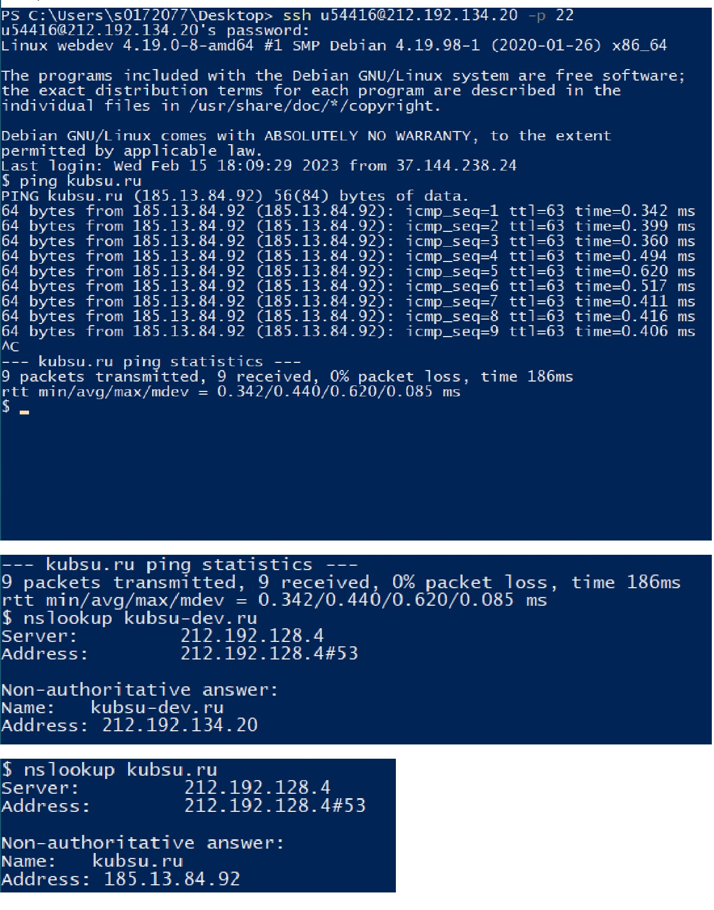
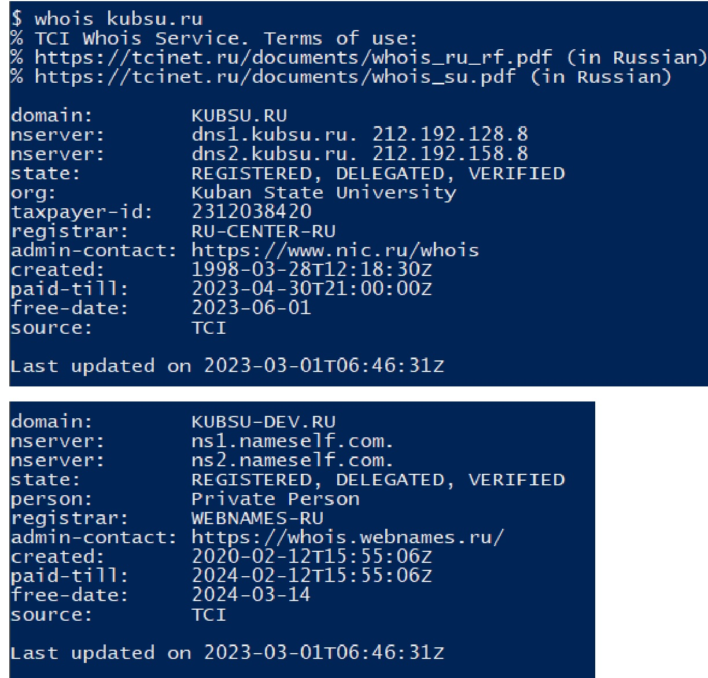

4) С помощью команды whois узнать дату регистрации домена kubsu.ru и kubsu-
dev.ru, добавить скриншоты в git-репозитарий задания.
5) Сделать веб-страницу index.html со скриншотами, добавить ее в git, с помощью
SSH склонировать репозитарий со скриншотами и страницей в каталог /var/www/html/
ваш_логин/. Веб-страница должна открываться по адресу http://ваш_логин.kubsu-
dev.ru/каталог_задания_1/
6) С помощью программы FileZilla или любого другого клиента FTP соединиться с
учебным сервером с вашим логином и паролем по протоколу FTP и скопировать на
локальный компьютер файлы задания из каталога /var/www/html/ваш_логин/. Сделать
скриншот FTP-клиента после скачивания файлов, добавить скриншот в GIT и на
страницу.
С помощью команды ping на учебном сервере узнать IP-адрес веб-сервера
kubsu.ru
С помощью команды nslookup узнаём A-записи и MX-записи домена kubsu.ru и
kubsu-dev.ru

4) С помощью команды whois узнать дату регистрации домена kubsu.ru и kubsu-
dev.ru, добавить скриншоты в git-репозитарий задания.
